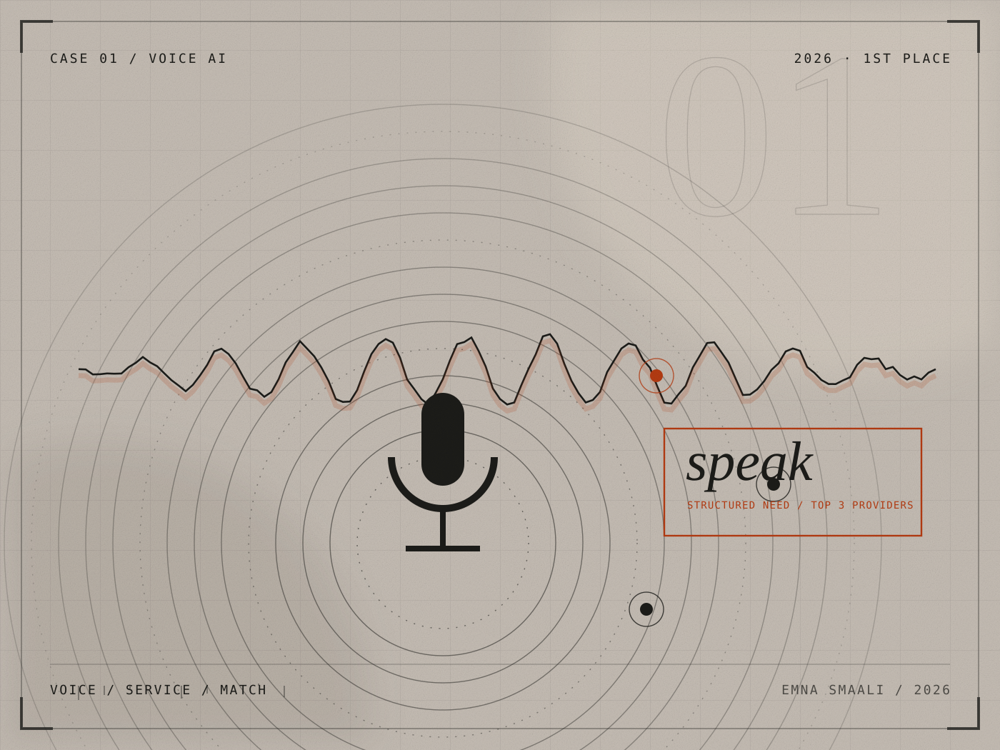
Voice, matched.
Speech in, a structured service request out — ranked against real providers.
TUNIS, TN 36.8065° N / 10.1815° E
EMNA SMAALI
Speech in, a structured service request out — ranked against real providers.
EMNA SMAALI — PORTFOLIO
ALL
WORK!
A featured selection of AI systems, full-stack products and field notes, built between 2024 and 2026.
SCROLL TO READ ↓
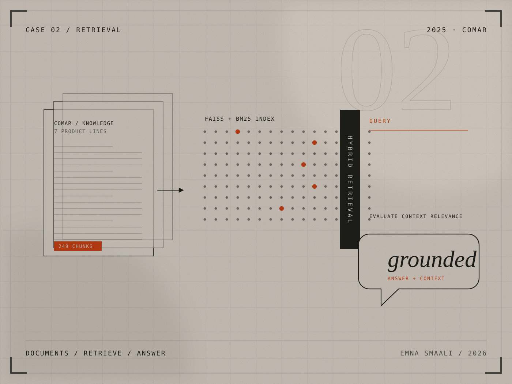
Mistral and hybrid retrieval across seven insurance worlds.
I build AI systems that stay grounded — retrieval that shows its working, evaluation that tells the truth, and interfaces people actually use.
OPEN TO A 6-MONTH FINAL-YEAR INTERNSHIP — JAN 2027
Who is behind the work
Tunis, Tunisia
I'm Emna, a final-year software engineering student in Tunis. I build LLM-powered products end to end — scraping and cleaning the data, designing retrieval, measuring what the model actually returns, then shipping the interface someone uses.
My favorite problems live where a model's confidence meets a real decision: an insurance question, a service request, a health signal. I care about systems that know what they don't know — and say so.
Four case files
Three field notes · Freshman file
Every project below started with a messy real-world input and ended with a result I could test. Open a case file for the decisions behind the demo.
Speak a need in natural language. The platform turns it into a structured request and ranks the right providers by location, availability and skills.
1st Place — Senior Student Project Competition, MedTech–SMU, 2026
A Mistral-powered insurance assistant covering seven product lines, grounded in 249 chunks and measured, not assumed.
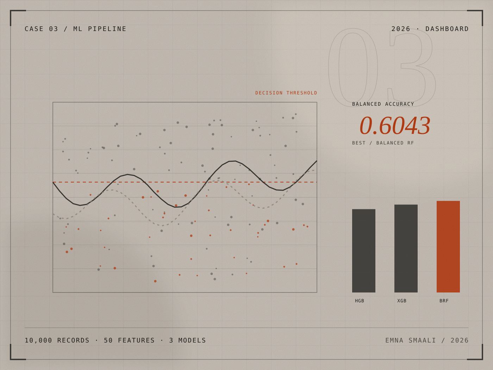
NEWA dashboard that shows the trade-offs, not just the prediction: model comparison, feature importance and a threshold you can move.
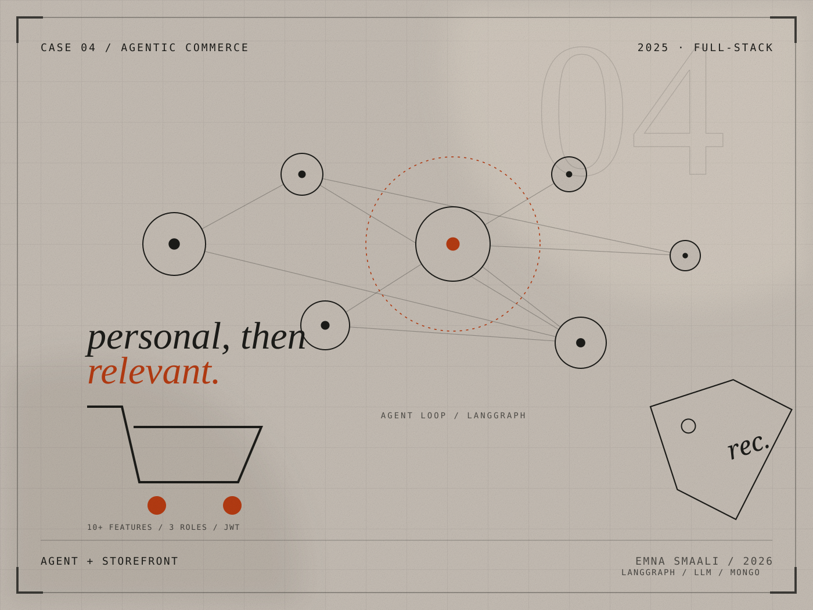
A multi-role storefront with a LangGraph assistant that reads product descriptions and customer reviews before recommending anything.
The rest of the work — internships where the deliverable was reliability, not a demo.
Scraped and structured a corpus of 800+ hackathons, then tested the analysis workflows against real submissions. Benchmarked LLMs on quality, latency, cost and reliability.
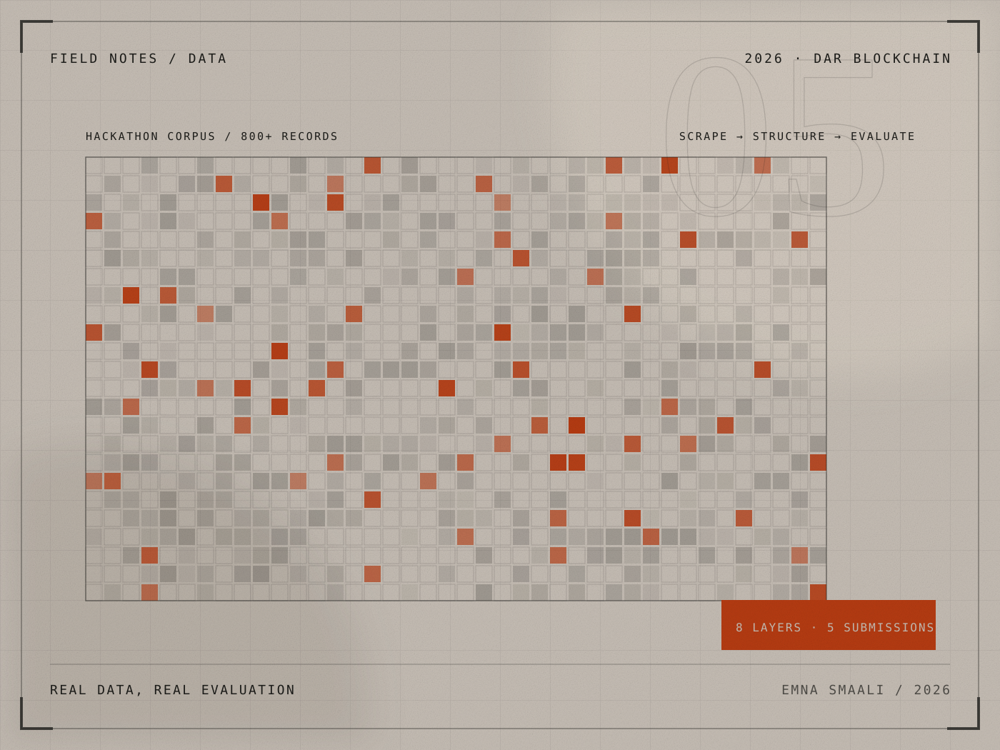
Configured a Layer7 API gateway with 5+ policies — authentication, OAuth2, SSL/TLS, rate limiting, routing — then validated the integrations in Postman and chased down the anomalies.
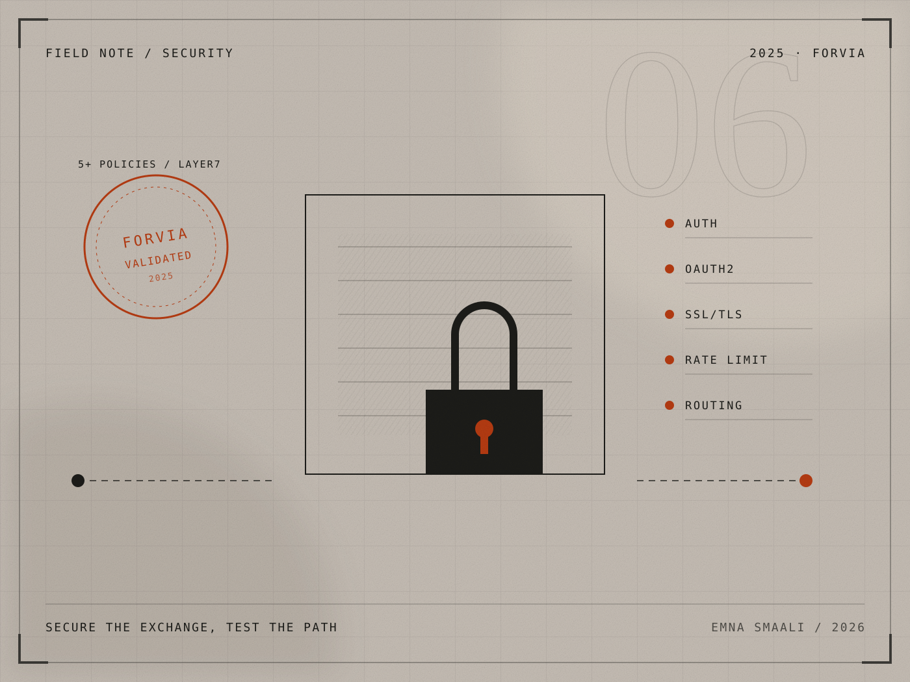
Wrote the requirements, architecture, use cases, data model and sequence diagrams before writing code. Then shipped two websites with a shared database — Vue 3 / Vuetify, Nuxt, Node / Express, TypeScript, PostgreSQL via Docker and TypeORM.
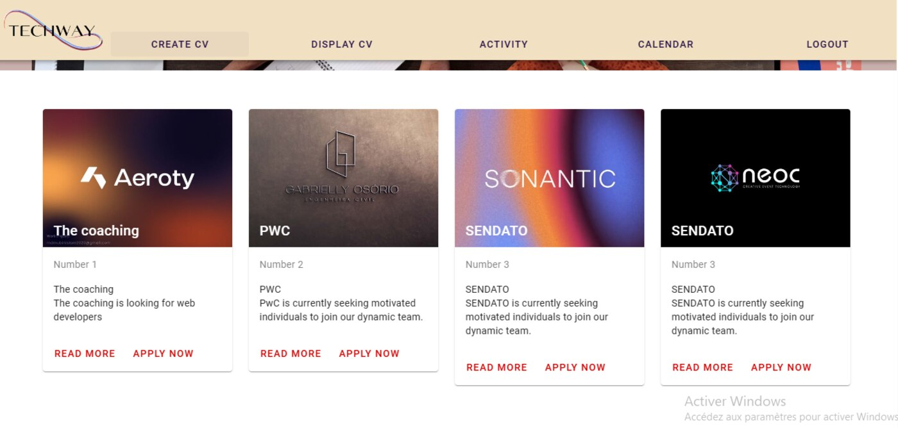
Before the AI internships: a stakeholder platform, Java games, pottery and a lot of coffee — the projects and rooms that made the later work possible.
Original site ↗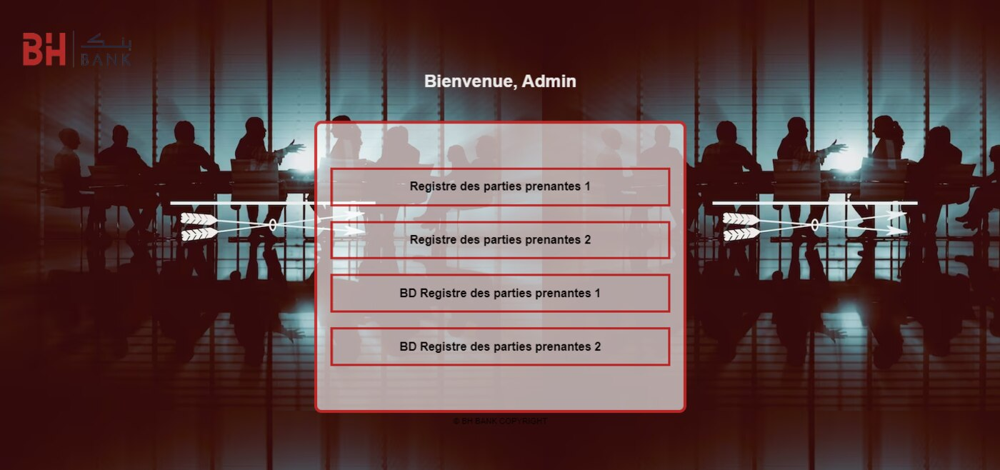
A stakeholder-management platform for banking operations. PHP, MySQL, HTML/CSS and Figma mockups.
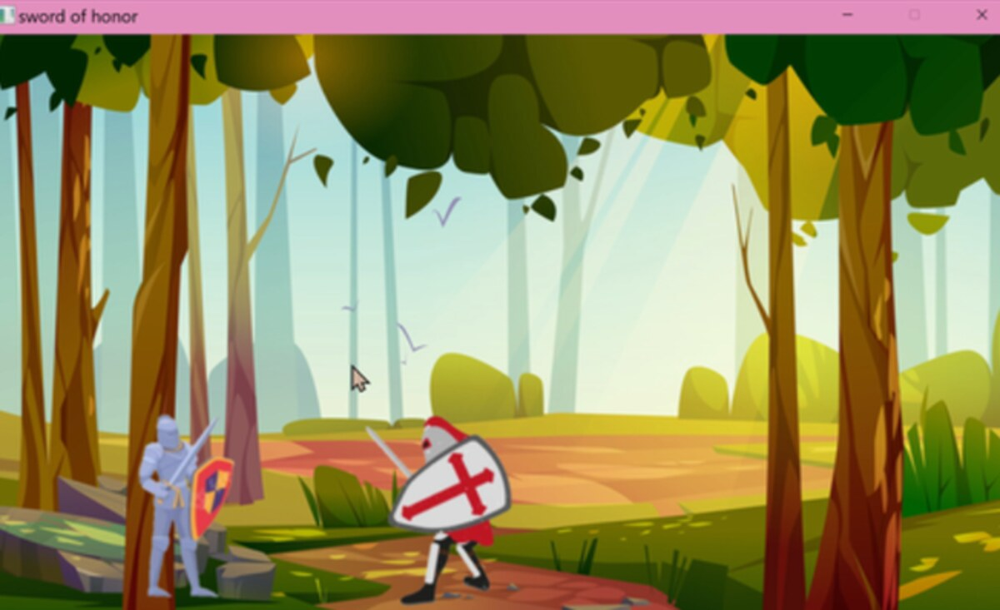
Two SDL2 games — the Chrome dinosaur runner and a fantasy game — built around a real-time loop.
A JavaFX + MySQL chat application and a Java event planner, built around OOP, persistence and a lot of debugging.
Also — a Vuetify website and a shared-database pair of sites at Dracode.
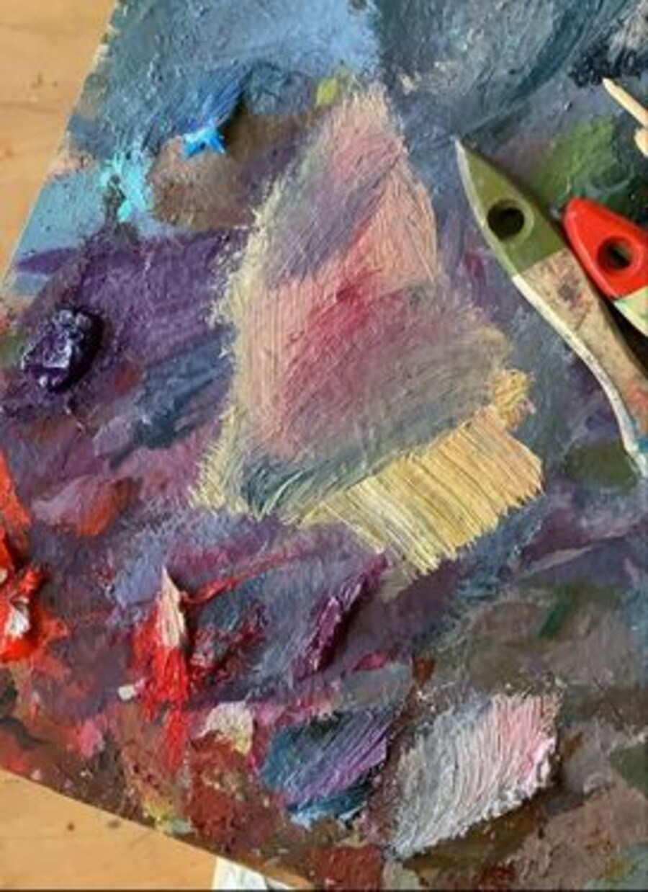
Painting, pottery and sculpture — the creative practice that still shapes how I approach interfaces.
Member of the IEEE RAS chapter and the Student Life Department. Led the prosthetic-bras action and RotaKids at Rotaract; coached brainstorming at Enactus. Career fairs, India Day, pottery and public-speaking workshops filled the rest.
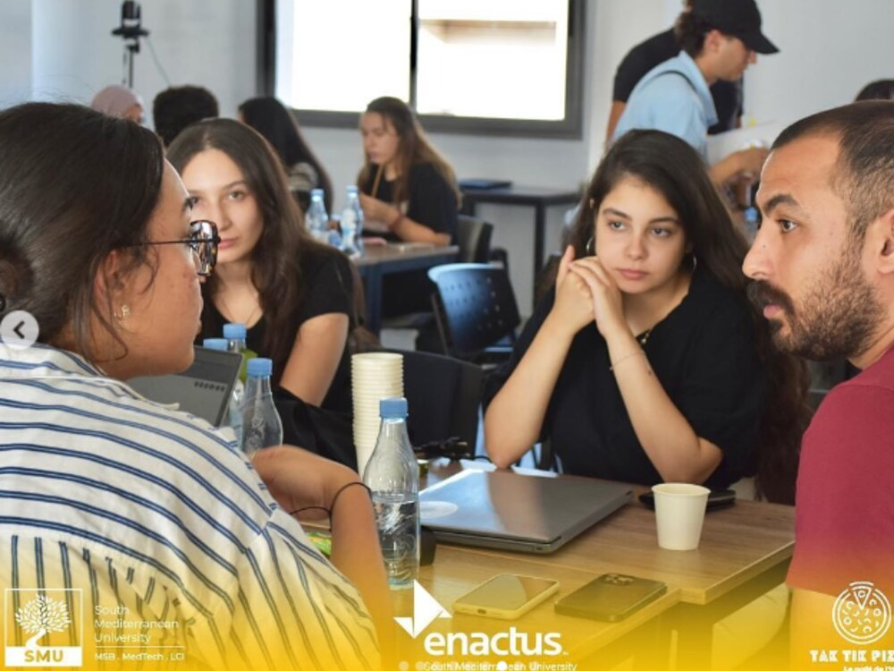
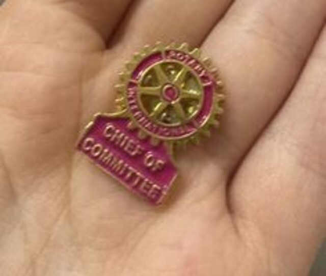
C · Java OOP · advanced OOP · data structures & algorithms · systems programming (Linux) · digital systems & assembly (MIPS) · SDL2 · Vuetify.
Compile Combat (2024) · IEEE WIE Hackathon — participation + award (2023) · certificates in C, Java classes & objects, Java abstraction and Weebly portfolios.
Six internships
2023 — 2026
Dar Blockchain · Tunis
South Mediterranean University · Tunis
COMAR Assurances · Tunis
Forvia Informatique Tunisie · Tunis
Dracode · Tunis
BH Bank · Tunis
The classifieds
What I reach for
Models, retrieval and the unglamorous work of checking them.
From a messy scrape to a dataset someone can defend.
Interfaces, APIs and the plumbing that keeps them honest.
Because a good model still needs a good question.
Awards, stamps
& certificates
Senior Student Project Competition · MedTech–SMU, 2026
Cr4ck0ut Cybersecurity Hackathon · 2024
She Helps Hackathon — Software in Healthcare · 2023
Nine completed programs — design, data and the fundamentals.
The rooms I helped run
People I worked with
The best demo is the one that survives a real question.
Securinets SMU
Recruitment and onboarding, team coordination, performance tracking, and the occasional mediation between strong opinions.
Enactus SMU
Ran the training department, organized workshops, and coached brainstorming and hackathon teams.
Rotaract Carthago Notre Dame
Led the prosthetic-bras action for women affected by breast cancer and the RotaKids education action; planned health and education initiatives.
IEEE SMU — member of the IEEE RAS chapter
Student Life Department — member, organizer
Off-screen: painting · pottery · public speaking
Three communities taught me the parts of software you can't put in a repository: how to run a team, how to teach, and how to listen to the person on the other side of the screen.
Formal training
Ongoing
2022 — PRESENT
Engineering degree in Software Engineering
South Mediterranean University · Tunis
Final year. The degree ends where the next chapter starts: a six-month internship from January 2027.
Science track · Tunisian baccalaureate
SMU — MedTech
Voice-Based Service Request — 1st place
Meta & Coursera certifications
FOUNDATIONS C · Java OOP · advanced OOP · data structures & algorithms · systems programming (Linux) · digital systems & assembly (MIPS) · SDL2 · Vuetify.
Open to a 6-month final-year internship starting January 2027.
--:-- — Tunis